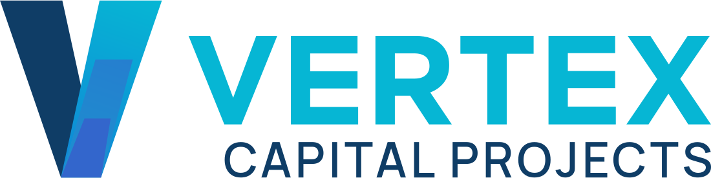

Start with the decision.
Understand the intended outcome, the delivery context and where confidence is needed.

SINGAPORE SOUTHEAST ASIA04 / OUR APPROACH
Good controls should help the team do the work. We build around the decisions that matter, make the evidence understandable and leave behind a rhythm people can keep using.
Work with VertexA PRACTICAL SEQUENCE
Understand the intended outcome, the delivery context and where confidence is needed.
Align schedule, cost, risk, change and information to a common control logic.
Show what moved, why it matters and who needs to act next.
Set practical ownership, governance and routines the team can maintain.
THE VERTEX STANDARD
Reporting exists to help people decide, not to fill a slide.
Give attention to the changes that could alter an outcome.
Owners and delivery partners need a common view of the work.
The programme should be able to own its control environment.
WAYS TO WORK TOGETHER
A time-bound review of a specific control issue, with a prioritised route to action.
Design and mobilise a joined-up control environment across process, data and governance.
Work alongside the client team to build decision-ready insight and internal capability.
FOR OWNERS, PMOS & DELIVERY PARTNERS